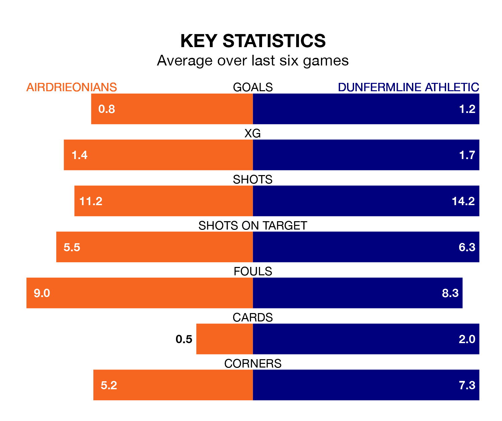

Dunfermline Athletic travel to Airdrieonians on Saturday in Scottish Championship.
The visitors come into the game on the back of a win in their last match, having beaten Arbroath 3-0 at home, with two goals from Craig Wighton and one from Joshua Edwards.
Airdrieonians, meanwhile, lost their last match, 2-1 against Partick Thistle, with their goal scored by Craig Watson.
In Joshua Rae, Airdrieonians can rely on one of the league's safest pair of hands. He has kept three clean sheets in his 13 appearances this season, and only one other 'keeper – Dundee United's Jack Walton – has been able to prevent the opposition scoring on more occasions in Scottish Championship.
In Dunfermline's net, Harrison Sharp has one clean sheet in eight games.
In the last 10 years, Airdrieonians and Dunfermline have played each other on 15 occasions. Airdrieonians won six of them, Dunfermline four, and they drew five times.
On average, Airdrieonians scored 1.5 goals and Dunfermline 1.3 in those matches.
Their last meeting was on August 5, when Dunfermline won 2-1 at home.
With 13 goals in 14 games so far this season, the home team are the league's joint-third-lowest scorers with 0.9 goals per game. And they are conceding at an average rate, letting in 19 goals at a rate of 1.4 per game.
Athletic are also below average scorers, with 1.2 goals per game, compared to a league average of 1.4. They have conceded 1.1 goals per game.
Airdrieonians are in disappointing form in Scottish Championship, with one win and two draws from their last six games.
With two wins and a draw over that period, the visitors' form is slightly better – they have taken seven points from 18, compared to Airdrieonians's five.
Dunfermline are fourth in the table after 13 games, of which they have won five and drawn three, earning 18 points.
The hosts are one place behind Dunfermline in fifth, with five wins and two draws putting them on 17 points.
